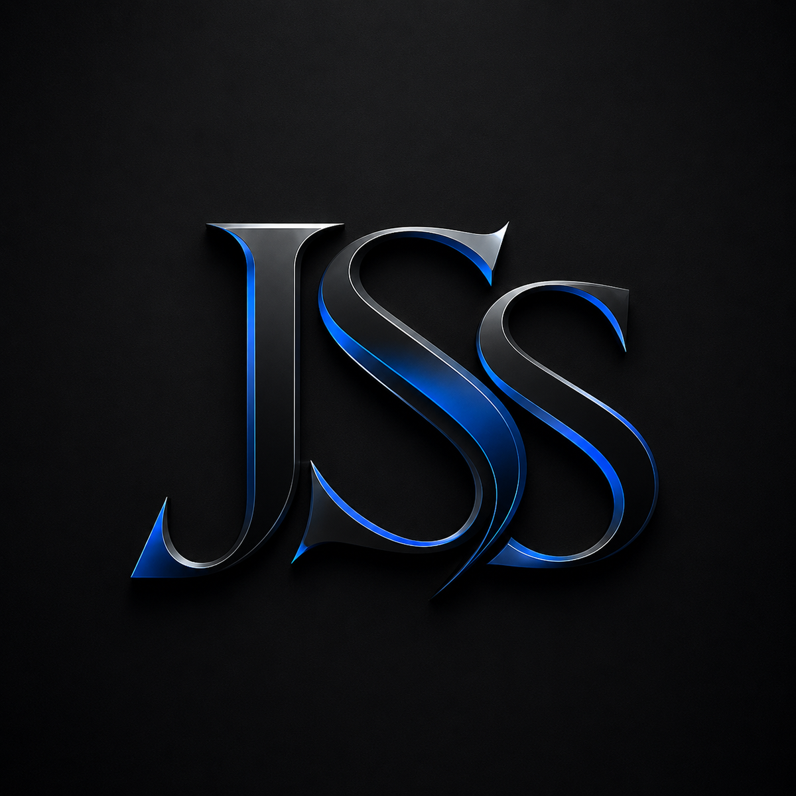

Professional first impression
Modern visuals, polished spacing, smooth hover effects, and consistent components make your website feel trustworthy from the first scroll.

JSSWeb DeveloperI build responsive websites, UI/UX layouts, PHP and MySQL systems, and VR-supported academic projects with a clean visual direction, organized code, and client-focused presentation.
I focus on the details clients notice first: layout, speed, readability, mobile responsiveness, smooth animation, and clear sections that help visitors understand what you offer.
Modern visuals, polished spacing, smooth hover effects, and consistent components make your website feel trustworthy from the first scroll.
Pages are structured to explain your services, show proof of work, and move visitors toward contacting or hiring you.
Layouts are designed for desktop and mobile with reusable CSS, organized sections, and cleaner files that are easier to update.
From a simple portfolio to a business website or database-backed system, I can help turn the idea into a clean and working digital product.
Landing pages, portfolios, service pages, healthcare, wellness, beauty, and brand websites.
Cleaner spacing, better navigation, stronger sections, readable content, and modern visual direction.
Record management, dashboards, inventory, reports, authentication, and internal workflows.
Technical support for capstone systems, VR project flow, debugging, and deployment preparation.
These projects show experience across e-commerce, wellness websites, healthcare content, internal systems, and immersive learning.

Infinite Beauty Raquel is a modern beauty and self-care website designed to represent elegance, confidence, and professionalism through a clean and visually appealing digital experience. The website highlights the brand’s beauty services in a soft, feminine, and organized layout, making it easy for visitors to explore what the business offers. Every section is designed to create a welcoming feeling, from the smooth navigation and polished visuals to the carefully arranged service information that helps clients understand the value of each treatment.

PHP and MySQL system for borrowing records, inventory monitoring, notifications, settings, and printable borrower slips.

VR educational game with tutorial flow, quest mode, pottery interaction, grading, feedback, and immersive learning logic.
Every project is built with a clear structure, consistent styling, responsive checks, and files prepared for hosting.
Define the pages, sections, target users, key message, assets, links, and important functions.
Create clean layouts, reusable CSS, smooth interactions, responsive behavior, and project-specific features.
Prepare the final files, check mobile layout, fix paths, and make the project ready for upload.
I can help you present your service, showcase your work, and create a smoother path from visitor to inquiry.